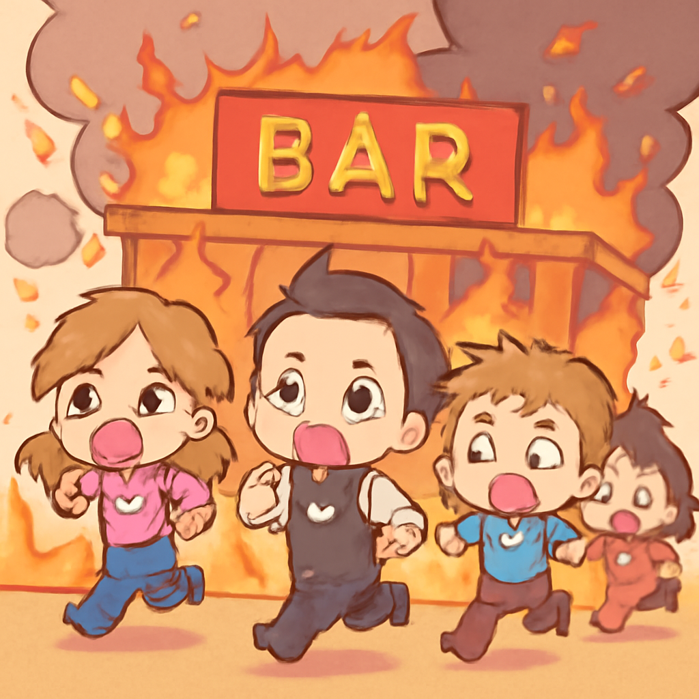
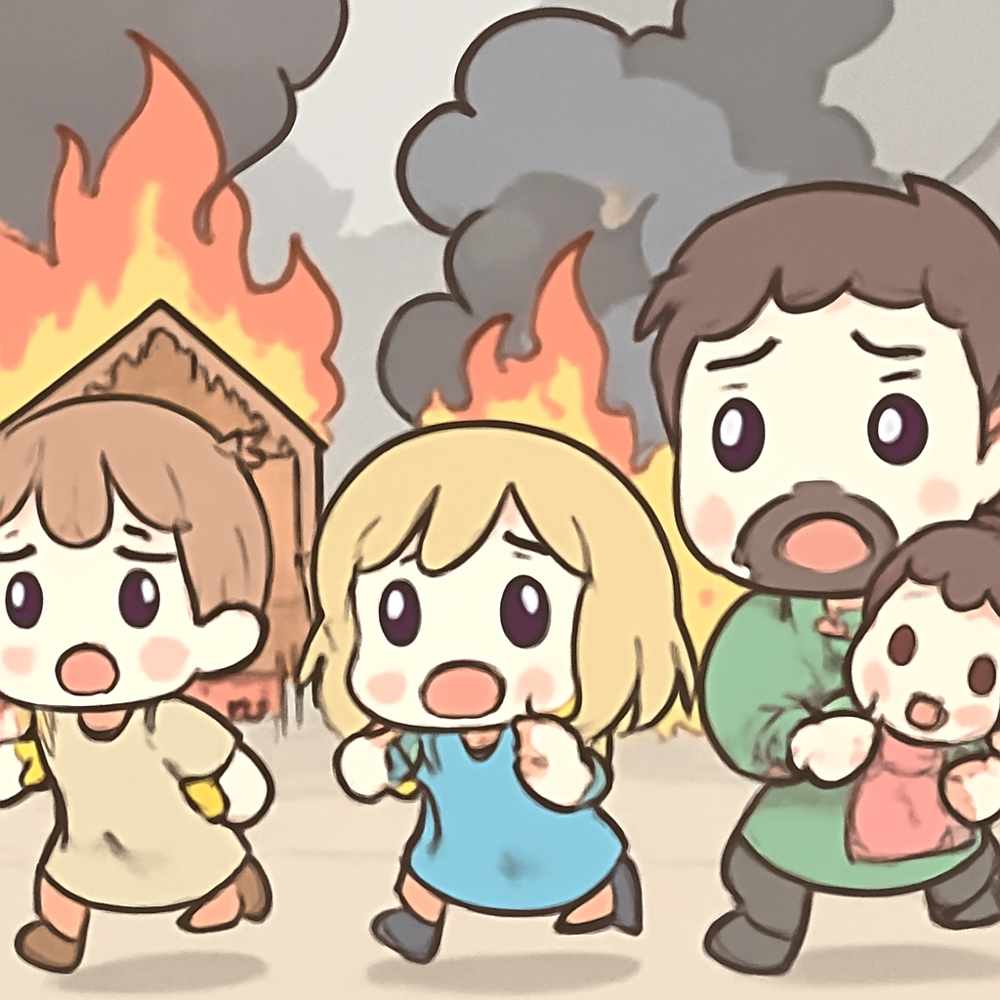

其一 · 泰國曼谷 · 酒吧大火造成27人喪生
曼谷一間酒吧發生大火，造成27人死亡。

在泰國曼谷的Chatuchak區，一間酒吧發生了可怕的火災，現場情況相當驚悚，顧客們為了逃生不得不衝過火焰。這起事件造成至少27人喪生，並引發了對消防安全的重新檢討。希望以後大家都能在酒吧裡享受飲品，而不是體驗火災的「熱情」。
🔗 原始新聞 ↗
2026-07-13 · 以古觀今，以笑抗愁
曼谷一間酒吧發生大火，造成27人死亡。

在泰國曼谷的Chatuchak區，一間酒吧發生了可怕的火災，現場情況相當驚悚，顧客們為了逃生不得不衝過火焰。這起事件造成至少27人喪生，並引發了對消防安全的重新檢討。希望以後大家都能在酒吧裡享受飲品，而不是體驗火災的「熱情」。
🔗 原始新聞 ↗
美國與伊朗在霍爾木茲海峽再度爆發衝突。
近期，美國與伊朗之間的緊張局勢再度升級，雙方在霍爾木茲海峽進行了互相攻擊。美方堅稱海峽仍然開放，然而伊朗則聲稱已經封閉，這場衝突可能會影響全球能源市場。海峽的局勢就像是一場沒有結局的戲劇，讓人看得心驚膽跳。
🔗 原始新聞 ↗
前卡塔爾埃米爾哈馬德享年74歲，對國家影響深遠。
卡塔爾的前埃米爾哈馬德·本·哈利法最近去世，享年74歲。他在1996年發動無血政變上台，並將卡塔爾變成了全球天然氣的財富中心。這對於中東政壇來說無疑是個重大的變動，卡塔爾的未來將如何發展，讓我們拭目以待。
🔗 原始新聞 ↗
西班牙阿爾梅里亞省發生致命野火，造成多起傷亡。

在西班牙阿爾梅里亞省，猛烈的野火使得多個城鎮陷入困境，造成至少12人喪生。當地居民回憶起火災發生時，通訊混亂，逃生艱難。這場災難不僅是對生態的挑戰，也提醒我們在自然災害面前，團結與準備的重要性。
🔗 原始新聞 ↗
南非啟動大規模遣返運動，超過53,000名外國人被遣返。
南非政府展開了一場針對非法移民的大規模遣返行動，至今已經有超過53,000名外國人被遣返。這一行動引發了不少爭議，因為南非正面臨著社會和經濟的多重挑戰。移民的問題就像是個熱鍋上的蚂蚁，讓人難以忽視。
🔗 原始新聞 ↗